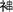
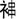

汝芳祖富斋公派下世录 |
||
二十四世 |
||
汝芳长子 |
富斋 |
生殁失考，葬一都狮子桥破坑鹅形壬山丙向兼子午。配吴氏，生殁失考，葬虎冲渐水弯大路面上中穴坤山艮向。生子三：子绍、子经、子英。复配唐氏，葬鹅掌盈下手垅凤形酉山卯向。 |
富斋长子 |
子绍 |
生殁失考，葬马冲虎形子山午向。配龙氏，生殁失考，夫妇同葬。生子一：友文。计开遗下祭产黄泥坑小东坪田一处，额租四担正，景祖绍祖平分，永为绍祖位下万鼎万鼐二房均管。 |
二十六世 |
||
子绍之子 |
友文 |
生殁失考，葬上黄泥坑屋背牛形戍山辰向。配郭氏，生殁失考，葬杨柳垅坳边狮形申山寅向。生子一：明成。 |
二十七世 |
||
友文之子 |
明成 |
生殁失考，葬姜辰垅猫儿洗面壬山丙向。配谢氏，生殁失考，葬姜辰垅猫儿洗面壬山丙向。生子二：朝富、朝宦。 |
二十八世 |
||
明成长子 |
朝富 |
生殁失考，葬竹子园凤形甲山庚向。配陈氏，生殁失考，葬竹子园凤形甲山庚向。生子三：楚规往郴州、楚现、楚游往郴州。 |
明成次子 |
朝宦 |
生殁失考，葬黄泥坑坛背垅人形癸山丁向。 |
二十九世 |
||
朝富次子 |
楚现 |
生殁失考，葬上黄泥坑屋背牛形辛山乙向。配肖氏，生殁失考，葬上黄泥坑屋背牛形辛山乙向。生子五：万鼎、万鼐、万方、万周、万愈。 |
三十世 |
||
楚现长子 |
万鼎 |
生顺治七年六月十三日未时，殁于康熙二十年九月二十一日申时，葬水冲黄牛吐舌形戍山辰向。配化氏，生殁失考，与夫同葬。生子一：历纲。 |
楚现次子 |
万鼐 |
生殁失考，葬马冲虎形子山午向。配刘氏，生殁失考，与夫同葬。生子一：历纪。 |
楚现三子 |
万方 |
生殁失考，葬山坑下垅里园内戍山辰向。配方氏，生殁失考，与夫同葬。生子一：历献，往江西。 |
楚现四子 |
万周 |
生殁失考，葬黄坭坑竹园大路面上牛形丑山未向。配方氏，生殁失考，与夫同葬。生子一：历科，历与承同辈。 |
楚现五子 |
万愈 |
生殁失考，葬上黄泥坑牛形戍山辰向。配唐氏，生殁失考，与夫同葬。 |
三十一世 |
||
万鼎之子 |
历纲 |
字伦士，住山坑垅里，生康熙辛丑年十一月十九日午时，殁于乾隆甲寅九月初八日寅时，葬酃县八都水打坑黄为经屋左角背。配方氏壬娘，生于康熙壬寅年六月十七日酉时，殁康熙戌辰年六月初六日午时，葬马冲虎形。生子三：世鸠、世鹏、世鹗。 |
万鼐之子 |
历纪 |
生殁失考，葬马冲虎形戍山辰向。配谢氏，生殁失考，葬马冲虎形戍山辰向。生子四：世番、世玑、世璇、世瑞。计开土窝渐水弯里田一处，租一担六斗正，又黄泥坑对门岭田一处，租四斗正，共租二担正，又买土里窝里田租二斗正，以为夫妇蒸尝子孙均管，又订计历纪祖山岭土浆为曾分折四房子孙均管。 |
万周之子 |
历科 |
字子鳌，生殁失考，葬大塘马道里大路面上坐东向西。配邓氏，生殁失考，与夫同葬。 |
三十二世 |
||
历纲长子 |
世鸠 |
字祥三，生殁失考，葬大塘圩脑里马道角园里坐东向西。配刘氏，生殁失考，与夫同葬。生子一：帝宣，往江西。计开龟背棕树三兜，其界址上至十二丈止，下至路止，右至三丈止，左至十九丈止此订。 |
历纲次子 |
世鹏 |
字凌云，生于康熙丙寅年六月十六日戍时，殁于乾隆癸酉年五月初四日酉时，葬酃县八都坳头老住居门蛇形。配扶氏仙娘，生于康熙壬申年九月二十七日酉时，殁于乾隆丙戍年二月十八日午时，与夫同葬。生子六：大英、大雄、大杰、大豪、大振、大维。 |
历纲三子 |
世鹗 |
字荣山，生于康熙甲戍年六月十九日未时，殁失考，葬坑口江下山。配张氏，生于康熙癸酉年，殁失考，与夫同葬坑口江下山。 |
历纪长子 |
世番 |
生殁失考，葬长岭背蛇形癸山丁向。配蔡氏，生殁失考，葬下罕垅蛇形甲山庚向。生子三：大华、大道、大缨。番祖遗下祭租黄泥坑老屋屋宇金星晒坪，原系享祠门口出一丘租四担正，下屋门口下手田一处租三担二斗正，大禾垅口垅脑里共田二处租三担正，又上黄泥坑老屋园土及对门岭园四房均管。计开地名一都黄泥坑马冲山岭一大块，其界址上至岭顶埂止，下至田及圳横止，坐身左至杨柳垅屋背大窝窝沟止，右至上洞坳圳横田止。又杨柳垅屋背黄牛吐舌山岭一大块，其界址上至田止，下至田止，坐身左至田止，右至埂止。又地名转冲山岭一大块，其界止上至岭顶倒水为界止，下至圳横及横路止，坐身左至右子脑坳丘田止，右至柞树坳大埂止。又地名竹子园大窝里，山岭连接竹子园山岭一大块，其界址，上至岭顶及田止下至田路止，坐身右至罾子丘坳田止，左至姜辰垅黄姓田止。又杉树垅山岭一大块其界上至砂子脑坳李姓田止，下至田止，左至李姓田止，右至沙子脑大石及田止。又横圳里连接倒窝里山岭一大块，其界上至岭顶止，下至岭脚止，左至麻竹冲下山朱姓田止，右至笋山小窝里连接小溪直下止。又五马来槽山岭一大块，其界，上至岭顶止，下至朱李姓田止，左至上段大埂止，右至直倒月洞笋山倒水为界止。又竹子园倒窝里连接牛皮盈山岭一大块，其界上至岭顶止，下至小溪及田止，左至朱李姓田止，右至邓姓田及小溪止。又竹山脑山岭一大块。又坛官岭山岭一大块。又在坳里圳下山岭一块。又老屋背山岭一大块。永为世番祖子孙均管此订。 |
历纪次子 |
世玑 |
生殁失考，葬上黄泥坑牛形戍山辰向。配罗氏，葬冢前屋背上手凤形艮山坤向。生子四：大明、大白、大志、大有。 |
历纪三子 |
世璇 |
葬长岭背蛇形癸山丁向。配邓氏，生殁失考，葬冢前屋背艮山坤向。生子二：大朋、大可。 |
历纪四子 |
世瑞 |
生殁失考，葬下罕垅甲山庚向。配钟氏，生殁失考，与夫同葬。生子二：大聪、大义。 |
三十三世 |
||
世鹏长子 |
大英 |
字胜千，生于康熙壬辰年七月十五日寅时，殁于乾隆戊申年九月十九日己时，葬龙泉县大汾圩背西山下辛山乙向。配廖氏秀娘，生于康熙戊戍年九月初八日亥时，殁乾隆戊申年五月初三日酉时，葬江西龙泉县二十七都徐峰李孔仙微昆中寅山申向，生子四：华兴、萃兴、肇兴、章兴。 |
世鹏次子 |
大雄 |
字涵武，生于康熙甲辰年九月初九日辰时，殁失考，葬江西。配邱氏，生殁葬失考，生子一：荣兴字康林往外。 |
世鹏三子 |
大杰 |
生于康熙壬子年十月十八日戍时，殁葬失考。 |
世鹏四子 |
大豪 |
字秉清，生于康熙甲辰年三月十九日卯时，殁乾隆己亥年八月初六日未时，葬酃县八都坳头黄维经屋左角背。配骆氏，生于乾隆戊申年十月十一日，葬酃县八都坳头门前蛇形鹏祖墓脚下，生子二：兴宗，兴瑞（字兰甫，夫妇由酃邑迁桂阳旗）。 |
世鹏五子 |
大维 |
字略远，葬酃邑八都坳头。 |
世鹏六子 |
大振 |
生殁失考，葬酃邑八都坳头。 |
世番长子 |
大华 |
生殁失考，葬黄泥坑屋背牛形戍山辰向。配氏，生殁失考。生子二：兴诗、兴礼。 |
世番次子 |
大道 |
生于雍正丁酉年六月初二日辰时，殁于乾隆癸卯年十月十七日午时，葬黄泥坑屋背凤形下墓艮坤兼寅申。配袁氏三娘，生于雍正庚戍年二月十九日辰时，殁葬失考。生子四：兴楠、兴成、兴盛、兴隆。道祖水口里田一处，租一担五斗正，永为蒸尝子孙管业。 |
世番三子 |
大缨 |
生殁失考，葬下罕垅蛇形甲山庚向。配林氏，生于雍正戊申年十二月初六日未时。生子二：兴鸿、兴发。 |
世玑长子 |
大明 |
生于雍正壬子四月十三日辰时，殁葬失考。配黄氏凤娘，生殁失考，葬竹子园蜈蚣吐珠形已山亥向。生子一：兴凤。 |
世玑次子 |
大白 |
生殁失考，葬黄泥坑屋背凤形艮山坤向。配郭氏，生殁失考，葬竹子园蜈蚣吐珠形巳山亥向。生子一：兴喜。 |
世玑三子 |
大志 |
生殁失考，葬冢前蛇形寅山甲向。配罗满娘，生于乾隆丁卯年九月二十八日辰时，殁葬失考。生子四：兴仁、兴儒、兴徨、兴侃。 |
世玑四子 |
大有 |
生殁失考，葬大禾垅寒牛不出栏戍山辰向。 |
世璇长子 |
大朋 |
生殁失考，葬黄泥坑屋背牛形辛山乙向。配方氏，生殁失考，葬白沙黄狗恋窠。生子二：兴松、兴茂。 |
世璇次子 |
大可 |
生殁失考，葬黄泥坑坛官背燕子扑梁形丁山癸向。 |
三十四世 |
||
大英长子 |
华兴 |
生于乾隆乙亥年八月二十九日申时，殁于乾隆乙卯年八月初六日戍时，往赣州，葬俞都北关外。配钟氏，夫妇同往赣州，葬俞都北关外。 |
大英次子 |
萃兴 |
字拔贤，生乾隆戊寅年四月，殁葬失考。配傅明达女乌洁，生乾隆丁丑年三月十三日，殁失考。生子二：启佐、启佑。 |
大英三子 |
肇兴 |
字观生，生于乾隆辛巳年五月初二日辰时，殁于乾隆丁酉年七月三十日己时，葬江西龙泉二十八都西山下玉竹窝口子山午向。 |
大英四子 |
章兴 |
字井保，生于乾隆乙酉年十月十四日酉时，殁于乾隆壬寅年八月十六日酉时，葬于江西龙泉二十八都大汾圩背沙窝里丙山壬向。 |
大华长子 |
兴诗 |
生殁失考，改葬黄牛吐舌戍山辰向与兴成同冢。 |
大华次子 |
兴礼 |
生殁失考，葬长岭背蛇形下墓。配陈氏，生殁失考，与夫同葬。生子二：启徨、恩仔。 |
大豪长子 |
兴宗 |
失考。 |
大豪次子 |
兴瑞 |
字兰甫，由酃邑迁居桂阳旗里，生乾隆己卯年十月二十二日酉时，殁失考，葬桂阳蒋涉龙形艮山坤向。配王氏，生于乾隆壬午年二月二十二日戍时，殁于乾隆辛丑年十二月十七日未时，与夫同葬左边。生子四：启宗、启德、启绪、启纶后迁居兴宁大叶垅。 |
三十五世 |
||
萃兴之子 |
启佐 |
生乾隆丙午年十月十八日。配李秀山女福洁，生乾隆己酉年四月。 |
兴瑞长子 |
启宗 |
生于乾隆辛丑年五月十四日，殁于乾隆丙午年三月初七日丑时，葬兴宁寨家村对门长嘀岭卯山酉向。配萧氏，生殁失考，葬兴宁大叶垅壬山丙向。生子一：武达。 |
兴瑞次子 |
启德 |
生于乾隆丁未年十二月十三日，配徐氏，生于乾隆丙寅年五月初八日。生子一：武魁。 |
兴瑞三子 |
启绪 |
生于乾隆癸丑年三月十六日午时，殁甲寅年五月初七日酉时，葬兴宁蒋溪大叶垅屋背茶山下壬山丙向。配曾氏，生壬子年八月十三日，殁丙申年三月二十四日巳时，葬兴宁火度帝辇山午山子向。生子三：武才、武发、武祥。 |
兴瑞四子 |
启纶 |
生于丙辰年二月十九日，葬与父同墓右边连共三穴。配郭氏，生己未年二月十八日，同兄墓左边。生子一：武福。 |
兴礼长子 |
启徨 |
字鉴平生，生殁失考，葬马冲圳面上。配龙氏，生殁失考，夫妇同葬。 |
兴礼次子 |
恩仔 |
生殁失考，葬上坪长垅里。 |
三十六世 |
||
启宗之子 |
武达 |
生于道光辛卯年六月十二日。配刘氏，生于丁亥年三月十七日，殁于咸丰庚申年，葬兴宁大叶垅屋背壬山丙向。生子三：昌凤、昌华、昌来。 |
启德之子 |
武魁 |
生于道光丙申八月十三日。 |
启绪长子 |
武才 |
生于丁丑年二月初五日，殁失考，葬兴宁敕花垅蔡塘埂坐东向西。配张氏，生光绪己卯年八月十六日，殁失考，葬兴宁大叶垅壬山丙向。生子四：昌近、昌远、昌通、昌达。 |
启绪次子 |
武发 |
生于道光甲申年九月初三日，殁葬失考。配张氏，生于道光癸未年十二月十八日子时，殁于道光庚戍年九月二十八日未时，葬兴宁紫草河丁山癸向。生子一：昌金。 |
启绪三子 |
武祥 |
生于道光庚寅年十一月三十日，殁失考，葬兴宁水口戏台背坐北向南。配陈氏，生于道光辛卯年三月十七日。生子一：昌千。 |
启纶之子 |
武福 |
生于丁亥年三月二十七日，殁失考，葬兴宁樟树坳坐西向东。配陈氏，生于道光乙酉年十一月初四日。生子四：昌龙、昌顺、昌富、昌荣迁居大汾弯里。 |
三十七世 |
||
武达长子 |
昌凤 |
生殁失考，葬兴宁樟树坳坐西向东。 |
武达次子 |
昌华 |
生于咸丰壬子年正月十四日。 |
武达三子 |
昌来 |
生于咸丰戊午年五月初八日。配李氏，生于咸丰丙戍年十二月初一日。 |
武才长子 |
昌近 |
生于道光辛丑年三月二十八日，殁失考，葬兴宁寮家冲坐西向东。 |
武才次子 |
昌远 |
生于道光甲辰年九月十四日。 |
武才三子 |
昌通 |
生于道光庚戍年九月二十八日。配庞氏，生于道光乙亥年十一月十五日卯时。生子一：荣猷。 |
武才四子 |
昌达 |
生于咸丰丁巳年十一月初八日。配肖氏，生于咸丰庚申年十一月初三日丑时。 |
武发之子 |
昌金 |
生于道光丙午年八月二十一日，殁失考，葬于兴宁寮家冲坐西向东。 |
武祥之子 |
昌千 |
生于咸丰戊午年三月十六日。 |
武福长子 |
昌龙 |
生于道光丙午年六月十五日，往外。 |
武福次子 |
昌顺 |
生于道光戊申年三月十五日。配黎氏，生于道光戊申年十二月十六日。生子一：荣松。 |
武福三子 |
昌富 |
生于咸丰甲寅年十月十六日。 |
武福四子 |
昌荣 |
生于咸丰年四月二十九日。 |
三十八世 |
||
昌通之子 |
荣猷 |
生于光绪庚子年八月十九日酉时。 |
昌顺之子 |
荣松 |
生殁葬失考。 |
世玑房派下世录 |
||
三十四世 |
||
大明之子 |
兴凤 |
生殁失考，葬于二都宋家地甘山杨梅盈艮山坤向。配扶氏，生殁失考，葬于二都杉山里屋侧左边田面上。生子一：启相。 |
大白之子 |
兴喜 |
生己亥四月初十日酉时，殁失考，预窨寿藏黄坭坑水口背鱼形壬山丙向。配黄氏运娘，生殁失考，葬黄坭坑枧冲人形乾山巽向。生子五：启凤、启顺、启祥、启禄、启绪。 |
大志长子 |
兴仁 |
生殁失考，葬黄坭坑屋背甲山庚向。娶黄氏奎娘，生殁失考，葬二都宋家地甘山杨梅盈寅山申向。复娶何氏贞娘，生殁失考，葬黄坭坑屋背甲山庚向。生子五：启盛、启祥、启祯、启位、启贤。 |
大志次子 |
兴儒 |
生殁失考，葬二都宋家地甘山杨梅盈寅山丙向，娶邓氏东娘，生殁失考，葬二都宋家地田埂屋侧左边菜园垅乙山辛向。生子二：启红、启亮（启泉）。 |
大志三子 |
兴徨 |
生殁失考，葬二都东水塘凹杨角垅。 |
大志四子 |
兴侃 |
生殁失考，葬二都象地甘山杨梅盈寅山申向。娶方氏，生殁失考，葬二都宋家地杉山大窝里辛山乙向。 |
大朋长子 |
兴松 |
生乾隆辛已二月十九日辰时，殁葬失考。 |
大朋次子 |
兴茂 |
生乾隆甲申三月初十日未时，殁葬失考。娶黄氏，生子一：启庆。 |
三十五世 |
||
兴凤之子 |
启相 |
生殁失考，葬二都杉山大窝里辛山乙向。生子一：贱古往外。 |
兴喜长子 |
启凤 |
生殁失考，葬黄坭坑老屋背甲山庚向。 |
兴喜次子 |
启顺 |
生己卯三月十五日申时，殁葬失考。娶邓氏，生殁葬失考。 |
兴喜三子 |
启祥 |
生辛已七月二十三日丑时。 |
兴喜四子 |
启禄 |
生己丑二月十六日亥时，殁葬失考。 |
兴喜五子 |
启绪 |
生丙申十月十七日酉时，殁失考，葬土窝里。 |
兴仁长子 |
启盛 |
生殁失考，葬二都宋家地枫树埂丁山癸向。 |
兴仁次子 |
启祥 |
字鸣光，生丁卯八月十八日寅时。配郭氏贵娘，葬二都宋家地枫树埂丁山癸向。生子一：武福。 |
兴仁三子 |
启祯 |
生殁失考，葬二都宋家地黄瓜垅大排里午山子向。 |
兴仁四子 |
启位 |
生殁失考，葬二都宋家地黄瓜垅大排里路面上午山子向。 |
兴仁五子 |
启贤 |
生殁葬失考。 |
兴儒长子 |
启红 |
生殁失考，葬二都凹背大坪。配郭氏，生殁葬未祥，生子二：春狗、烂狗 。 |
兴儒次子 |
启泉 |
配郭氏，生殁葬未载，生子二：武外、武存。 |
三十六世 |
||
启泉长子 |
武外 |
|
启祥之子 |
武福 |
生丙申十二月初七日戍时。 |
启红长子 |
春狗 |
|
启红次子 |
烂狗 |
|
启泉次子 |
武存 |
|
兴茂之子 |
启庆 |
生乾隆乙卯，殁葬失考。 |
启才之子 |
武盛 |
幼殁。 |
二十五世 |
||
富斋次子 |
子经 |
生殁失考，葬一都大弯里中埂仙人现掌形未山丑向。配黄氏萧娘，生殁失考，葬与夫同。生子二：友魁、友爵。经祖蒸尝，以山坑田里金星听堂晒坪菌土鱼塘为蒸尝。 |
二十六世 |
||
子经长子 |
友魁 |
娶郭氏，生殁失考，合同葬黄坭坑枧冲凤形辛山乙向。生子四：明龙、明拱、明榜、明彪。 |
二十七世 |
||
友魁长子 |
明龙 |
字东乔，生殁失考，葬一都河洞象形酉山卯向。配阮氏三娘，生殁失考，葬大弯里艮山坤向。生子五：朝宗，朝宰，朝宥，朝宾、朝宇，遗下香炉苍瓶一堂。 |
友魁次子 |
明拱 |
生殁失考，葬山坑陈家屋背蛇形辛山乙向，配? 氏生殁失考，葬与夫同，生子一往外。 |
二十八世 |
||
明龙长子 |
朝宥 |
生殁失考，葬一都中洞屋背中埂辛山乙向。配郭氏，生殁失考，葬老虎冲凤形辛山乙向。复配扶氏洪娘，生殁失考，葬营内屋背壬山丙向。生子三：楚泷、楚庆、楚国。 |
明龙次子 |
朝宗 |
生殁失考，葬营内水口路面上。 |
明龙三子 |
朝宰 |
生殁失考，葬一都山坑屋背张天海螺形。 |
明龙四子 |
朝宾 |
生殁失考，葬一都土公山苏州凹虎形。生子一：楚留。 |
明龙五子 |
朝宇 |
生殁失考，葬一都土公山苏州凹虎形龙里。 |
二十九世 |
||
朝宥长子 |
楚泷 |
生殁失考，葬一都营内屋背蛇形丙山壬向。配?? 氏，生殁失考，葬与夫同墓。生子三：万昌、万升、万早。 |
朝宥次子 |
楚庆 |
生殁失考，葬山坑老鸦垅已山亥向。 |
朝宥三子 |
楚国 |
生殁失考，葬山坑上洞园内巽山乾向。 |
三十世 |
||
楚泷长子 |
万昌 |
生殁失考，葬一都山坑营内屋背蛇形丙山壬向。配李氏二娘，生殁失考，葬新屋背月形已山亥向，生子三：历位，历贤，历仕。其铅锣一面昌祖位下子孙公置。 |
楚泷次子 |
万升 |
生殁失考，葬一都圭公山牛形辛山乙向。 |
楚泷三子 |
万早 |
生殁失考，葬山坑上洞屋背月形艮山坤向。配龙氏，生殁失考，葬老鸦垅虎形丙山壬向。生子四：历俭、历佳、历伟、历任。 |
三十一世 |
||
万昌长子 |
历位 |
娶黄氏初娘，生殁均失考，合同葬一都中冲辛山乙向，生子三：世圣、世胡、世重。 |
万昌次子 |
历贤 |
生康熙丙申八月十六日午时，殁雍正甲辰四月初三日已时，葬一都山坑营内屋背已山亥向。娶李氏黑娘，葬与夫同墓生子三：世禄、世祈、世。 |
万昌三子 |
历仕 |
娶陈氏，生殁均失考，合同葬营内屋背丙山壬向。生子五：世俊、世祯、世礼、世金、世。 |
三十二世 |
||
历位长子 |
世圣 |
字洪兆，娶李氏，生殁均失考，合同葬县城罗爷庙背左边白果树下，得买罗仁安地土安葬辛山乙向。生子五：大锦、大煌、大几、大胡、大修。 |
历位次子 |
世胡 |
字仲学，生殁失考，葬四都中天堡，配刘氏，生殁失考，葬红腾山山口丙山壬向。生子三：大福、大爵、大禄。 |
历位三子 |
世重 |
生殁均失考，葬山坑营内屋背卯山酉向。配罗氏玉娘，生殁失考，葬张海螺形乙山辛向。生子二：大开、大无往州。 |
历贤长子 |
世禄 |
生殁均失考，葬一都山坑营内屋背蛇形已山亥向鱼壬丙，配扶氏凉娘，生殁失考，葬与夫同墓。生子四：大富、大碔、大彬、大贵。 |
历贤次子 |
世祈 |
生殁失考，葬山坑上洞屋背象形巽山乾向兼辰戍。 |
历贤三子 |
世 |
字若山，生康熙己卯正月初六日酉时，殁乾隆癸已又三月初七日，葬一都山坑屋背象形申山乾向兼坤艮。配胡氏，儒学正堂苏水向朝匾赠宝婺永辉，生康熙丙戍十二月二十一日丑时，殁嘉庆辛酉八月十八日辰时，葬山坑屋背象形辛山乙向兼酉卯。生子四：大慧、盛龙、盛佑、启云。 |
历仕长子 |
世俊 |
字希荣，生殁失考，葬营内屋背酉邓兼乙辛，娶蔡氏，生殁失考，葬大弯里癸丁兼子午。生子五：大攸、大信、大忠、大洪、五公公。 |
历仕次子 |
世祯 |
生殁失考，葬山坑蔡银脑艮坤兼寅甲。 |
历仕三子 |
世礼 |
生殁失考，葬一都山坑水口背凉伞树路面上。 |
历仕四子 |
世金 |
生殁失考，葬一都大湾里。 |
历仕五子 |
世 |
生殁失考，葬山坑水口背凉伞树下。 |
三十三世 |
||
世圣长子 |
大锦 |
生殁失考，葬桂东县凹背大几大湖三人同墓坐北向东。 |
世圣次子 |
大煌 |
生殁失考，葬桂邑罗爷庙凹上得陈姓地土安葬。生子一：兴明。 |
世圣五子 |
大修 |
生雍正丙午十一月二十五日酉时。配扶氏，生乾隆庚申十一月十一日辰时，殁葬均失考，生子一：寿昌。 |
世重长子 |
大开 |
生殁失考，葬大弯里亥已兼丙。配乌氏，生殁失考，葬大弯里丑未兼癸丁。生子二：兴望，兴国。 |
世胡长子 |
大福 |
生殁失考，葬江西高排红腾山酉山卯向。配张氏，生殁失考，葬高排红腾山庚山甲向。生子四：兴茂、石行、石生、石秀。 |
世胡次子 |
大爵 |
生殁失考，葬江西高排红腾山亥山已向。 |
世胡三子 |
大禄 |
生殁失考，葬江西高排大坑凹丙山壬向。生子二：兴财、兴梁。 |
世 |
大慧 |
字简书，生雍正丙午九月十四日酉时，殁嘉庆二年一月初一日辰时，葬一都山坑屋背象形辛山乙向兼酉时。配赵氏冬娘，生雍正辛亥十一月初十日酉时，殁嘉庆丁卯六月二十日辰时，原葬山坑梅顶盈后迁一都土窝里渐水弯老虎迢石赖形丙山壬向兼子午。生子四：兴秀、兴荣、兴邦、兴唐。 |
世 |
盛龙 |
生殁失考，葬大弯脚下。 |
世三子 |
盛佑 |
生殁失考，葬山坑营内屋背。 |
世 |
启云 |
生殁失考，葬大弯脚下。 |
世禄长子 |
大富 |
生殁失考，葬一都山坑水口背凉伞树路下。配偶失考。生子一：盛宗。 |
世禄次子 |
大碔 |
生殁失考，葬一都山坑山牛弯。 |
世禄三子 |
大彬 |
生殁失考，葬一都河洞龟形祖山大石下。 |
世禄四子 |
大贵 |
生殁失考，葬一都土公山鹅颈背牛形庚山甲向。 |
世俊长子 |
大攸 |
字来崇，生乾隆丁已五月十七日辰时，殁葬失考。配陈氏凤娘，生殁失考，葬一都中冲路面上巽山乾向兼辰戍。生子一：兴侃。 |
世俊次子 |
大信 |
字继忠，生乾隆己未八月十八日卯时，殁乾隆戊申十月十六日。配吴氏，生殁失考，夫妇合葬山坑梅顶盈张天海螺形已亥兼壬现分金 。生子一：兴仁。 |
世俊三子 |
大忠 |
配扶氏，生殁均失考，夫妇合同葬山坑上洞屋背象形，生子一：兴隆。 |
世俊四子 |
大洪 |
生乾隆癸已八月十八酉时，殁失考，葬一都山坑山牛弯路面上壬山丙向。 |
世俊五子 |
五公公 |
生殁失考，葬一都大弯里子经祖坟面大路上。 |
三十四世 |
||
大煌长子 |
兴明 |
生殁失考，葬山坑上洞屋背。 |
大修长子 |
兴寿 |
生嘉庆元年八月十九日未时，殁失考，葬一都黄龙过江对安石面上赖形坐东向西。 |
大福长子 |
兴茂 |
乳名兴宗，生殁失考，葬江西高排红腾山打古盈辛山乙向。配吴氏，生殁失考，葬江西高排红腾山山口申山寅向。生子一：启昌。 |
大福次子 |
石行 |
生殁失考，葬江西高排红腾山禾坪埂庚山甲向。 |
大福三子 |
石生 |
字秀路，生殁失考，葬江西高排红腾山酉山卯向。 |
大福四子 |
石秀 |
字兴梁，生殁失考，葬江西高排红腾山酉山卯向。 |
大禄长子 |
兴财 |
字观秀，配王氏，生殁失考，夫妇合同葬江西高排红腾山癸山丁向。 |
大开长子 |
兴望 |
生殁失考，葬山坑刘家屋背。 |
大开次子 |
兴国 |
生乾隆辛未五月初五日酉时，殁失考，葬一都狮子桥鹅形上手路面上庚山甲向兼酉卯。 |
大富长子 |
盛宗 |
生殁失考，葬山坑营内屋背。 |
大彬长子 |
甫林 |
生殁失考，葬一都新埂甫。 |
大慧长子 |
兴秀 |
字翠华，生乾隆辛未二月二十七日未时，殁道光癸未三月二十七日戍时，葬大弯里，后迁葬一都土公山苏州凹狮子腰壬丙兼亥已与二弟同墓。配黄氏招娘，生乾隆癸酉七月初三日酉时，殁失考，葬一都山坑营内屋右边罗面上乙山辛向。继配陈氏香娘，生乾隆己卯五月十三日午时，殁嘉庆己卯一月二十一日午时，葬一都土公山苏州凹马鞍形壬山丙向兼子午，生子二：启文、明开；生女二：润桃适、次女寿桃适扶俊堂。 |
大慧次子 |
兴荣 |
字永华，生乾隆丙午二月初十日已时，殁嘉庆庚申九月二十四日午时，葬一都山坑屋背象形，后迁葬一都土公苏州凹狮子腰壬山丙向兼亥已，与长兄同墓。配刘氏淑慎，幽闲早悲黄鹄失志柏舟四十余年，寿偷古稀。生乾隆甲申年二月十四日午时，殁道光丁酉六月初十日未时，葬一都山坑屋背金星象形庚山甲向兼卯酉分金。邑庠邓子才志墓。生子三：启明、启成、启王睿 ；生女二：长女玉兰适罗泮兴，次女凤兰适邓礼儒。 |
大慧三子 |
兴邦 |
字在华，生乾隆已卯正月初七日卯时，殁失考。配郭氏，生乾隆甲申正月初五日，殁失考。夫妇合同葬山坑营里对门盈蛇形酉山卯向。生子二：启兰，启朋。 |
大慧四子 |
兴唐 |
字映华，生乾隆丙戍七月二十四日已时，殁己卯正月初九日未时，葬一都山坑屋背老鸦垅已山亥向。配黄氏，生乾隆甲午一月十八日已时，殁癸卯七月二十二日已时，葬一都土公岭右边路下未丑兼坤艮。生子三：启盛、启江、启河。 |
大攸之子 |
兴侃 |
字六宗，生乾隆癸未六月初一日丑时，殁失考，葬山坑陈家屋背戍山辰向。 |
大信之子 |
兴仁 |
字福宗，生乾隆庚寅五月十五日申时，殁失考，葬破坑狮子桥鹅形路面上亥山已向兼壬丙。 |
大忠之子 |
兴隆 |
字时美，生乾隆癸已八月二十八日酉时，殁失考。配陈氏，生殁失考，夫妇合同葬一都破坑狮子桥鹅形大路面上亥山已向兼壬丙。 |
三十五世 |
||
兴茂之子 |
启昌 |
生嘉庆戊午六月二十四日午时，殁咸丰辛亥十月二十四日，葬三都上堡鸡西坑癸山丁向。配罗氏。生子二：武英、武顺。 |
兴秀长子 |
启文 |
字羡恒，生乾隆戊申十月初三日卯时，殁嘉庆庚辰十月十三日，葬山坑营里对门盈蛇形右边酉山卯向。配扶氏桃娘，生乾隆丁未五月一日未时，殁嘉庆甲申六月二十六日辰时，葬一都大弯里后迁葬土公山苏州凹田面上窝里凤形已亥兼壬丙。生子一：武顺；生女一：金盘适黄遇簧。 |
兴秀次子 |
明开 |
生殁失考，葬一都大弯里祖坟脚下。 |
兴荣长子 |
启明 |
字月恒，生乾隆癸卯三月二十日，殁道光丙申四月，葬一都山坑屋背象形辛山乙向兼戍辰。配贡氏，生殁失考，葬大弯里，复配郭氏，生乾隆乙已六月二十日，殁道光庚戍八月二十一日已时，葬与夫同墓。生子二：武科、武联；生子一：丹盘。 |
兴荣次子 |
启成 |
生乾隆乙已八月二十九日酉时，殁嘉庆三年十月初五日，葬山坑梅顶盈张天海螺形。 |
兴荣三子 |
启睿 |
字泮登，号凤钦，生嘉庆辛酉正月初八日申时，殁失考，葬狮子桥上手路面上埂子里。配邓秀封女闺名闺芹，生嘉庆庚申九月初二日已时，殁咸丰戊午正月十一日辰时，葬一都土公鹅颈路面上岭顶狮形乾兼亥已。生子一：武裕乳名善绿，生女二：长女初盘适黄锡章，次女桂盘适扶献朝。 |
兴邦长子 |
启兰 |
字祥谐，生乾隆癸卯七月十四日卯时，殁失考，葬一都破坑狮子桥鹅形路里戍山辰向。配胡氏，生乾隆癸卯正月二十六日辰时，殁失考，葬山坑新屋背龟形。生子一：武升。 |
兴邦次子 |
启朋 |
字益深，生乾隆戊申正月初四日辰时，殁道光甲午十月二十九日酉时，葬破坑狮子桥鹅形上手路面上已亥兼壬向。配扶氏，生庚戍年十一月十二日卯时，殁咸丰丙辰一月二十一日卯时，葬一都大塘马鞍形坐南向北。生子一：武谟。 |
兴唐长子 |
启盛 |
字济恒，生乾隆乙卯正月二十七日卯时，殁嘉庆庚辰，葬山坑水口背凉伞树下癸丁兼午子。配黄氏生女一：贵球适扶益堂。 |
兴唐次子 |
启江 |
生嘉庆戊午六月二十五日未时，殁失考，葬一都山坑水口背凉伞树下上路下癸山丁向兼子午。 |
兴唐三子 |
启河 |
字祥开，生嘉庆戊申九月十九日，殁葬失考。 |
三十六世 |
||
启昌长子 |
武英 |
生道光己丑三月二十五日，殁失考。配郭氏，生庚寅八月初四日酉时，殁葬失考，生子二：九龙、贵龙。 |
启昌次子 |
武顺 |
生道光辛卯十二月二十九日酉时，殁失考。配钟氏，生道光丙申十月二十一日戍时，殁失考，夫妇合同葬四都西水体土凹辛山乙向。生子一：昌余。 |
三十七世 |
||
武顺之子 |
昌余 |
乳名石龙，生咸丰丁已二月十八日戍时。配钟氏，生咸丰甲寅九月十七日卯时，殁失考，夫妇合葬四都。生子一：荣赐。 |
三十八世 |
||
昌余之子 |
荣赐 |
生同治甲戍四月初四日已时。配李氏，生同治癸酉九月二十三日酉时，殁失考，夫妇合葬四都。生子一：盛春。 |
三十九世 |
||
荣赐之子 |
盛春 |
生光绪庚子二月二十六日已时。配钟氏，生光绪。 |
三十六世 |
||
启文之子 |
武顺 |
字殿池，生于嘉庆辛未七月三十日午时，殁葬失考。配骆瑞朝之长女闺名月芹，生于嘉庆乙亥七月十六日申时，殁葬失考。生子三：连昌、进昌、达昌、继昌继武裕为嗣；生女二：绪求适，雪梅适陈耀南。 |
启明长子 |
武科 |
字殿元，生嘉庆丙寅十二月初一日寅时，殁咸丰癸丑正月二十六日，葬一都山坑水口背凉伞树下甲山庚向。配李氏，生殁失考，葬山坑水口背凉伞树下癸山丁向。 |
启明次子 |
武联 |
字殿夷，生道光丙戍七月二十八日，殁葬失考。 |
启虞之子 |
武裕 |
名善绿，生道光庚子六月初八日，殁失考，葬山坑屋背盈茶园里。立武顺次子昌进为嗣。 |
启兰之子 |
武升 |
字殿良，生嘉庆壬申七月二十六日。配周氏，生殁失考。生子一：远昌，生女一：鸾英。 |
启朋之子 |
武谟 |
字锦章生嘉庆壬申十二月十五日，殁葬失考。 |
三十七世 |
||
武英长子 |
九龙 |
生咸丰辛亥九月初十日已时，殁葬失考。 |
武英次子 |
贵龙 |
生咸丰甲寅十二月初三日酉时，殁葬失考。 |
武顺长子 |
连昌 |
字茂周，生道光戊戍一月初一日寅时，殁葬失考。 |
武顺次子 |
达昌 |
字则周，生咸丰乙卯七月初七日戍时，殁葬失考。 |
武裕之子 |
进昌 |
字辅周，生道光庚戍十一月十八日丑时，配黄章锡长女，生道光戊申八月十二日卯时，殁葬失考，复配张氏出。生子一：荣发。 |
三十八世 |
||
进昌之子 |
荣发 |
生光绪丙戍。配吴氏，生光绪。 |
三十七世 |
||
武升之子 |
远昌 |
乳名阳春，生咸丰辛亥九月二十五日，殁葬失考。 |
三十一世 |
||
万早之子 |
历俭 |
生殁失考。配曹氏，生殁失考，夫妇合同葬一都山坑鹅掌盈举桥角面上虎形。 |
万早次子 |
历佳 |
生殁失考，葬一都土公山龙形坤山艮向兼未丑。配钟氏，生殁失考，葬山坑老鸦垅虎形已亥兼丙壬。生子一：世经。 |
万早三子 |
历伟 |
生殁失考，葬一都山坑陈家屋背蛇形酉山卯向。配龙氏，生殁失考，葬中洞寅山申向兼艮坤。生子一：世伦。 |
万早四子 |
历任 |
生殁失考，葬山坑营内屋背丙壬兼已亥。配康氏，生殁失考，葬新屋里龟形已亥兼乾巽。生子四：世给、世缙、世红、世绣。 |
三十二世 |
||
历佳之子 |
世经 |
配唐氏，生殁均失考，夫妇合葬一都土公山龙形上手未山居向，同墓。生子三：大栋、大标、大柏。 |
历任长子 |
世给 |
生殁失考，葬上洞屋背月形。 |
历任次子 |
世缙 |
配殷氏，生殁失考，夫妇合同葬山坑上洞屋背。生子一：大彬。 |
历任三子 |
世红 |
字奇彩，生殁失考，葬山坑营内屋背壬丙兼亥已，配黄氏凤娘，生殁失考葬新屋背龟形已亥兼巽乾。生子四：大材，大杞，大槢，大枚。 |
历任四子 |
世绣 |
配欧氏，生殁失考，夫妇合同葬山坑上洞屋背月形中辰山戍向。生子一：大仪。 |
历伟之子 |
世伦 |
生殁失考，葬一都山坑上洞屋背狮形辰山兼乾巽。配郭氏，生殁失考，葬营内屋背绵形辛乙兼已亥。生子二：大相，大林。 |
三十三世 |
||
世经长子 |
大栋 |
生殁失考，葬土公山坤艮兼丑未。配殷氏，生殁失考，葬三阳弯。生子二：景安，应安。 |
世经次子 |
大标 |
生殁失考，配扶氏，生殁失考，夫妇合同葬土公岭癸山丁向兼已亥。生子二：兴荣，兴仁。 |
世经三子 |
大柏 |
字竹有，生康熙壬午三月十四日酉时，殁失考，葬土公山龙形癸丑兼丁亥。配黄氏，生康熙壬午五月十三日已时，殁失考，葬一都山坑屋背象形酉山卯向兼庚甲。生子四：兴孔、兴圣、兴文、兴创。 |
世缙子 |
大彬 |
夫妇生殁葬失考。生子一：兴法。 |
世红长子 |
大材 |
生殁失考，葬上洞屋背巽山乾向。 |
世红次子 |
大杞 |
生殁失考，葬一都山坑上洞屋背巽山乾向。 |
世红三子 |
大槢 |
字文达，生殁失考，葬上洞屋背下手屋角已山亥向兼卯酉。生子四：兴高、兴贤、兴隆、兴旺。 |
世红四子 |
大梅 |
生殁葬失考。 |
世绣之子 |
大仪 |
字逊元，生康熙己丑九月二十二日丑时，殁乾隆癸卯十二月二十一日已时。配刘氏，生康熙乙酉四月初一日，殁乾隆丑酉七月初十日酉时，夫妇合同葬桂东县泽溪侧江排屋背锦被盖孩儿形艮山坤向。生子一：兴菊。 |
世伦长子 |
大相 |
生殁失考，葬一都坪洞学堂前右边来龙蛇形。配袁氏，生殁失考，葬与夫同墓丙壬兼子午，生子一：兴达。 |
世伦次子 |
大林 |
生殁失考，葬二都大岭下水口路人形庚山甲向。配袁氏，生殁失考，葬四都小岭任尾牛形乙辛兼酉卯。生子二：兴云，兴龙。 |
三十四世 |
||
大栋长子 |
景安 |
生殁失考，葬山坑水口路边牛形。 |
大栋次子 |
应安 |
生殁失考，葬山坑屋背象形。 |
大标长子 |
兴荣 |
生殁失考，兄弟同葬二都大岭下青山排。 |
大标次子 |
兴仁 |
字援清。 |
大柏长子 |
兴孔 |
字鲁尼，生雍正丁未三月初一日卯时，殁失考。配唐氏，生雍正壬子八月初四日已时，殁失考，夫妇合同葬一都土公山龙形坤山艮兼申寅。生子二：启超，启翠，翠继与兴菊为嗣。 |
大柏次子 |
兴圣 |
字尧皆，生雍正己酉八月十四日午时，殁失考，葬一都土公山龙形未山丑向兼坤艮。配张氏，生雍正庚戍二月二十八日酉时，殁失考，葬一都新坊虎形辛山乙向。生子一：启群。 |
大柏三子 |
兴文 |
字秉秀，生殁失考，葬一都土公山乙向兼戍辰。配何氏，生殁失考，葬老鸦垅侧面虎形丙山壬向。生子三：启拔，启科，启书。 |
大柏四子 |
兴创 |
字垂昆，配刘氏，生殁均失考，夫妇合同葬山坑上洞屋背巽山乾兼辰戍。生子二：启后，启佑。 |
大槢 长子 |
兴高 |
生殁失考，葬山坑陈家三羊弯癸山丁向兼子午。 |
大槢? 次子 |
兴贤 |
字松林，生殁失考，葬山坑水口背凉伞树下上路下子山午向。 |
大槢 三子 |
兴隆 |
字容昌，配殷氏，生殁均失考，夫妇合同葬破坑土窝下手大路边庚山甲向。生子一：启明。 |
大槢 四子 |
兴旺 |
字禹田，配彭氏，生殁均失考，夫妇合同葬山坑水口背路面上，生子一：启清，生女一：贞凤。 |
大仪之子 |
兴菊 |
字时九，生乾隆丙辰二月十七日午时。配刘氏诰娘，生乾隆庚申六月初五日申时，殁嘉庆丁已三月初三日戍时，葬一都山坑上龙里上手屋角牛形壬山丙向兼子午，生子一：启翠。 |
大彬之子 |
兴法 |
生殁失考，葬大塘马道里巽乾兼戍辰。 |
大林长子 |
兴云 |
字华安，配郭氏，生殁失考，夫妇合葬四都小岭牛形埂尾生子一：启凤。 |
大林次子 |
兴龙 |
字文献，生乾隆戊午九月初三日亥时，殁葬失考。配郭氏，生殁失考，葬二都毫里老屋前屋背象形辛山乙向，生子一：启乐。 |
大相之子 |
兴达 |
生殁失考，葬大塘马疲乏里坐东向西来垅纲形巽山乾向。生子二：启茂、启祥。 |
三十五世 |
||
兴孔之子 |
启超 |
字彩廷，生乾隆庚午五月初四日卯时，配宁氏新娘，生乾隆甲戍正月十一日戍时，殁失考，夫妇合葬山坑屋背老鸦垅。生子三：武珠，武珍，武瑶。 |
兴圣之子 |
启群 |
字俊，生乾隆壬申正月十五日辰时。配扶氏求娘，生乾隆癸酉二月二十四日酉时，殁失考，葬一都土公山牛形路布酉山卯向。生子二：武云，武霞。 |
兴文长子 |
启拔 |
字文耀，生殁失考，葬山坑老鸦垅虎形亥已兼壬丙。 |
兴文次子 |
启科 |
字云祥，生乾隆丙戍七月十六日卯时，殁失考，葬一都山坑屋背象形辛山乙向。 |
兴文三子 |
启书 |
字书祥，生乾隆癸已八月十四日已时，殁失考，与兄同墓。 |
兴创长子 |
启后 |
生殁失考，葬山坑上洞屋背巽乾兼辰戍。 |
兴创次子 |
启佑 |
生乾隆壬午二月十四日卯时，配?? 氏，生殁失考，葬大塘凹土堪下。生子一：武苍。 |
兴隆之子 |
启明 |
生乾隆壬辰三月十三日酉时，殁失考，葬溪源。 |
兴菊之子 |
启翠 |
字映廷，生乾隆丁丑二月十九日已时，殁失考，葬一都山坑新屋背龟形已山亥向。配郭氏，生乾隆乙亥六月十二日亥时出。生子四：武雩、武韶、武魁，义男武冠。 |
兴云之子 |
启凤 |
生殁失考，葬四都小岭蛇形。配邱氏，生乾隆癸酉十一月初七日，葬四水中洞铺大路边。生子二：武明，武学。 |
兴龙之子 |
启乐 |
生乾隆壬寅二月十八日酉时，殁葬失考。 |
兴达长子 |
启茂 |
生殁失考，葬与祖母许氏同墓，网形乙山辛向。 |
兴达次子 |
启祥 |
生乾隆戊寅十月二十五日辰时。配廖氏，生乾隆癸未三月十八日酉时，殁葬均失考。 |
三十六世 |
||
启超长子 |
武珠 |
生乾隆辛丑三月十八日丑时，殁失考，葬一都山坑屋背与云祥叔右边同墓。 |
启超次子 |
武珍 |
生乾隆丙午七月三十日已时，殁失考葬，一都土公山形路面上庚甲兼丑卯。 |
启超三子 |
武瑶 |
生乾隆辛酉四月初六日已时，配宁氏，生乾隆甲寅十月初四日酉时，往外。 |
启群长子 |
武云 |
字蔚清，生乾隆癸已六月十六日酉时，殁失考，葬一都山坑屋背金星象形乾殿兼戍辰。配郭氏，生殁失考，葬一都土公岭右边路下龙形未丑兼艮坤，生子一：昌隆。 |
启群次子 |
武霞 |
字蔚然，生乾隆壬寅九月十九日辰时，殁嘉庆二年二月十六日，葬大弯里。 |
启佑之子 |
武苍 |
乳名苍子，生殁失考，葬山坑水口背路面上。 |
启翠长子 |
武雩 |
字咏旋，生乾隆庚子十月十七日酉时，殁嘉庆丙子十二月初五日午时，葬一都山坑水口背凉伞树下癸山丁向，配黄氏进凤，生乾隆庚子九月二十二日戍时，殁葬失考，生子二：昌杨、怀芳。 |
启翠次子 |
武韶 |
字吴陛，生乾隆戊申十月初五日午时，娶甸氏，生乾隆丙午一月十九日丑时，往外。 |
启翠三子 |
武魁 |
字石庆，生乾隆癸丑四月十六日寅时，殁己酉十月，葬一都山坑水口背凉伞树下癸山丁向。 |
启翠义子 |
武冠 |
字昌林，生乾隆庚寅九月十九日亥时，殁丙申二月初四日戍时，葬一都山坑屋背金星象形乾巽兼戍辰，配失考。生子一：昌仁。 |
启凤长子 |
武明 |
生乾隆壬寅六月二十七日寅时，殁癸丑十一月初三日，葬四都军营堡蛇形乾山巽向。配郭氏贵娘，生乾隆庚子十月二十日，殁辛亥三月十一日子时，葬祖溪漆树垅。生子二：昌来、昌奎往外。 |
启凤次子 |
武学 |
生乾隆乙已九月二十日戍时，殁道光二十三年二月初二日丑时，葬四都苎斜熊家洞陈家屋背乙山辛向。配方氏出。 |
三十七世 |
||
武云之子 |
昌隆 |
字德期，生嘉庆丙子十二月三十日未时，殁葬失考，配黄氏生道光甲午九月二十六日戍时。 |
武雩长子 |
昌杨 |
字淇斯，生嘉庆戊辰?? 月十九日丑时。配张氏生嘉庆己丑七月初二日酉时，生子一：荣恩。 |
武雩次子 |
怀芳 |
生嘉庆甲戍正月二十一日丑时。 |
武冠 之子 |
昌仁 |
字梅开，生嘉庆丁已十二月二十一日酉时。 |
武明长子 |
昌来 |
字亮财，生嘉庆甲子四月初五日丑时，配沈氏，生己卯五月二十九日酉时，生女二：新连、秋连、义男荣科。 |
武明次子 |
昌奎 |
往外，生殁葬失考。 |
三十八世 |
||
昌来义子 |
荣科 |
字贵章，生道光癸已正月初一日子时，配钟氏，生道光庚子四月十六日未时。 |
山坑友魁祖派下世录 |
||
二十七世 |
||
友魁三子 |
明榜 |
生殁失考，葬一都贱围又横山与兄弟同墓，配肖氏，继配李氏，生殁失考葬，土公岭对门牛形同葬。生子一：朝秀。 |
友魁四子 |
明彪 |
生殁失考葬与明榜同墓。 |
二十八世 |
||
明榜之子 |
朝秀 |
生殁失考，葬老路里蛇形，配黄氏，生殁失考，葬老路又仙女纺车。生子一：楚林。 |
明龙三子 |
朝宾 |
生殁失考，葬上黄坭坑通天鼠烛形，配黄氏，生殁失考，葬与夫同墓。生子一：楚留。 |
二十九世 |
||
朝秀之子 |
楚林 |
生殁失考，葬苍古庙上手黄牛度舌。配李氏，生殁失考，葬苍古庙下杂上手，生子一：万标。 |
朝宾之子 |
楚留 |
生殁失考，葬新屋背龟形。配李氏，生殁失考，葬与夫同墓。生子一：万秋。 |
三十世 |
||
楚林之子 |
万标 |
生殁失考，葬土公岭来龙金星。配李氏，生殁失考，与夫同墓，生子一：历坐。 |
楚留之子 |
万秋 |
生殁失考，葬上黄坭坑通天鼠烛形，配黄氏，生殁失考，葬与夫同，生子一：历荣。 |
三十一世 |
||
万标之子 |
历坐 |
生殁失考，葬土公岭。配扶氏，生殁失考，葬与夫同墓。生子一：世兴。 |
万秋之子 |
历荣 |
生殁失考，葬失考，生子一：世亨。 |
三十二世 |
||
历坐之子 |
世兴 |
生殁失考，葬土公岭屋背金星坤山艮向。 |
历荣之子 |
世亨 |
字茂山，生殁失考，葬上洞屋背，配陈氏，生殁失考，葬与夫同。生子一：大成。 |
三十三世 |
||
世亨之子 |
大成 |
字云振，生乾隆己已十月十三日，殁道光甲申三月十六日寅时。配肖氏，生乾隆癸酉五月初一日卯时，殁嘉庆乙亥十一月二十四日辰时，夫妇合葬厢都百耳窝虎形子山午向。生子二：兴仲，兴菊。 |
三十四世 |
||
大成长子 |
兴仲 |
字绍台，生乾隆己酉五月二十九日午时，配郭氏，生乾隆辛丑正月十三日亥时，殁道光辛卯四月二十七日酉时，葬厢都百耳窝虎形癸山丁向。继配魏氏，生乾隆癸丑正月初八日辰时，生子一：启福。 |
大成次子 |
兴菊 |
生殁未载，又配黄氏，生乾隆庚午十一月三十日戍时，殁失考，葬大江里牛形。 |
三十五世 |
||
兴仲抚子 |
启福 |
字光奎，生嘉庆戊寅三月初九日未时。配陈氏，生道光癸未正月十二日戍时，殁道光己酉四月二十七日酉时，葬百耳窝蛇形壬山丙向。 |
山坑友爵祖派下世录 |
||
?二十六世 |
||
子经次子 |
友爵 |
字录廷，生殁失考，葬黄坭坑黄牛不出栏形辛山乙向。配李氏金娘，生殁失考，葬一都中洞凤形未山丑向。生子二：明儒，明化。 |
二十七世 |
||
友爵长子 |
明儒 |
生殁失考，葬大弯里丑山未向。配肖氏隆娘，生殁失考，葬一都东岭中埂凉伞树下中埂乾山巽向。生子二：朝表、朝赛。 |
友爵次子 |
明化 |
生殁失考，葬山坑水口月形，配刘氏三娘，生殁失考，葬土公山皇子盈，生子九。 |
二十八世 |
||
明儒长子 |
朝表 |
字天存，生殁失考，葬黄坭坑牛形，配扶氏玉娘，生殁失考，葬山坑龙瓜坤山艮向。生子五：楚春、楚泰、楚柳、楚奏、楚秦。 |
明儒次子 |
朝赛 |
生殁失考，葬大弯里。 |
二十九世 |
||
朝表长子 |
楚春 |
生殁失考，四人同葬一都黄坭坑黄牛不出栏形。 |
朝表次子 |
楚泰 |
|
朝表 三子 |
楚柳 |
|
朝表 四子 |
楚奏 |
生殁失考，葬大弯里。 |
朝表 五子 |
楚秦 |
字康平，生殁失考，葬黄坭坑黄牛不出栏形。配扶氏凤娘，生殁失考，葬山坑水口虎形酉山卯向。生子六：万湖、万广、万千、万席、万宰、万宦。 |
三十世 |
||
楚秦长子 |
万湖 |
生殁失考，葬土公山。 |
楚秦次子 |
万广 |
|
楚秦三子 |
万千 |
生殁失考，葬一都山坑水口月形。 |
楚秦四子 |
万席 |
|
楚秦五子 |
万宰 |
生殁失考，配谷氏回娘，生殁失考，葬一都山坑水口月形。生子一：历俊。 |
楚秦六子 |
万宦 |
字映顺，生殁失考，葬四都小岭龙形。配梁氏三娘，生殁均失考，葬土公岭牛形。生子一：历佑。 |
三十一世 |
||
万宰之子 |
历俊 |
字土生，生殁失考，葬荒田垅。配罗氏，生殁失考，同葬荒田垅庚山甲向。生子一：世云。 |
万宦之子 |
历佑 |
字启仁，生殁失考，葬大弯里仙人现掌形癸山丁向。配扶氏七娘，生殁失考，葬土公岭牛形。继配张氏长娘，生殁失考，葬大江羊坑荒田埂。生子三：世福、世祥、世禧。 |
三十二世 |
||
历俊之子 |
世云 |
字自臣，生殁失考，葬酃邑八都王候盈癸山丁向。配罗氏干娘，生殁失考，葬大横溪牛塘蛇形辛山乙向。生子四：振明，盛文，大贵，楚伦。 |
历佑长子 |
世福 |
字自申，生殁失考，葬一都山坑大弯里癸山丁向。配黄氏连娘，生殁失考，葬一都大塘东岭下手甲山庚向。生子三：大富、大宁、大宽。 |
历佑次子 |
世祥 |
字文兆，生殁失考，葬一都山坑大弯里。配扶氏长娘，生殁失考，葬山坑新屋背虎形。生子五：大华、大芳、大著、大勋、大芬。 |
历佑三子 |
世禧 |
字光华，生殁失考，葬山坑水口月形。 |
三十三世 |
||
世云长子 |
振明 |
生殁失考，葬酃邑八都小石门。 |
世云次子 |
盛文 |
配陈氏，往蓝山。生子一：世昌。 |
世云三子 |
大贵 |
字荣华，生雍正甲寅四月二十七日子时，殁嘉庆庚午九月十八日戍时，葬酃邑七都自源黄石垅滴水窝辛山乙向。葬与夫同墓，生子一：兴起。 |
世福长子 |
大富 |
生殁失考，三人葬黄坭坑中埂。 |
世福次子 |
大宁 |
|
世福三子 |
大宽 |
|
世祥长子 |
大华 |
字非数，生殁失考，葬山坑水口。 |
世祥次子 |
大芳 |
字佳惠。 |
世祥三子 |
大著 |
字济南。 |
世祥四子 |
大勋 |
字钟苍，生殁失考，葬荒田垅月形。 |
世祥五子 |
大芬 |
字帝臣，生殁失考，葬土公山牛形。 |
三十四世 |
||
大贵之子 |
兴起 |
字发元，生乾隆甲午七月初五日戍时，殁道光乙未正月十七日吉时，葬老屋背甲山庚向。配邓氏闰娘，生乾隆辛丑四月初六日丑时，殁道光甲午四月初十日子时，葬一都山坑老屋背申山寅向。生子三：启璋、启瑞、启珍。 |
三十五世 |
||
兴起长子 |
启璋 |
生嘉庆戊午十一月初七日申时。配谢氏，生嘉庆壬申十月初五日已时，生子三：武焕、武浩、武传。武浩继胞弟启瑞为嗣。 |
兴起次子 |
启瑞 |
生嘉庆庚午九月二十一日戍时，殁道光庚寅八月十八日已时，葬酃邑七都朱砂寮下洞未山丑向。配郑氏，生嘉庆甲戍正月十八日吉时，立胞兄启璋次子武浩为嗣。 |
兴起三子 |
启珍 |
生嘉庆丁丑九月二十八日午时，配崔氏，生道光甲申八月初十日吉时，生子三：武光、武国、武万。 |
三十六世 |
||
启璋长子 |
武焕 |
生道光丙午四月十二日戍时，殁葬失考。 |
启璋次子 |
武传 |
生咸丰甲寅四月初七日戍时，殁葬失考。 |
启瑞嗣子 |
武浩 |
生咸丰辛亥十一月十八日已时，殁葬失考。 |
启珍长子 |
武光 |
生道光戊申十月十八日子时，殁葬失考。 |
启珍次子 |
武国 |
生咸丰戊午正月二十四日已时，殁葬失考。 |
启珍三子 |
武万 |
生咸丰年吉月吉日吉时。配氏，生咸丰年吉月吉日吉时。生子一：昌远。 |
三十七世 |
||
武万之子 |
昌远 |
生光绪吉时。 |